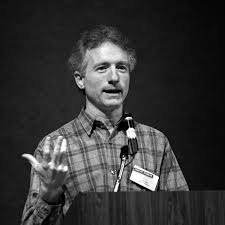

1980 Left PARC to join Apple Computer and suppoprtted the development of the Apple Lisa. He work for Apple until 1997, holding various positions including Vice President of AppleNet, Vice President of the Advanced Technology Group, and Chief Scientist.
2001 Tesler joined Amazon in Seattle where he was a vice president of engineering. Shortly thereafter promoted to the vice president of shopping experience.
2005 Moved back to Silicon Valley to join Yahoo as vice president User Experience and Design group
2008 Left Yahoo and worked for a year at the personal genetics information company 23andMe as product fellow.
2009 Established himself as an independent consultant in December 2009 to help Silicon Valley companies with designing their user interfaces and experiences.
1973 Accepted offer PARC for the the development of Xerox Alto, the first computer system design around a graphical user interface (GUI). While working on Gypsy word proccessor for Office Sytem group and Smalltalk, He along with Tim Mott developed the basic copy and paste function, now a standard feature in computing.

Larry Gordon Tesler
The man behind the work
1945 Born in The Bonx New York City US.
1961 Graudetes from Bronx High School of Science.
1964 Graduates with a degree in Mathematics from Stanford University.
1960s Participated in the counterculture.
1970 Moved to Oregan with his daughter.
1971 Offerred a position at PARC in On-line Office System Group of which he turned down.
2020 Died Febuary 61 2020 (aged 74) Portola Valley, Califonia, U.S